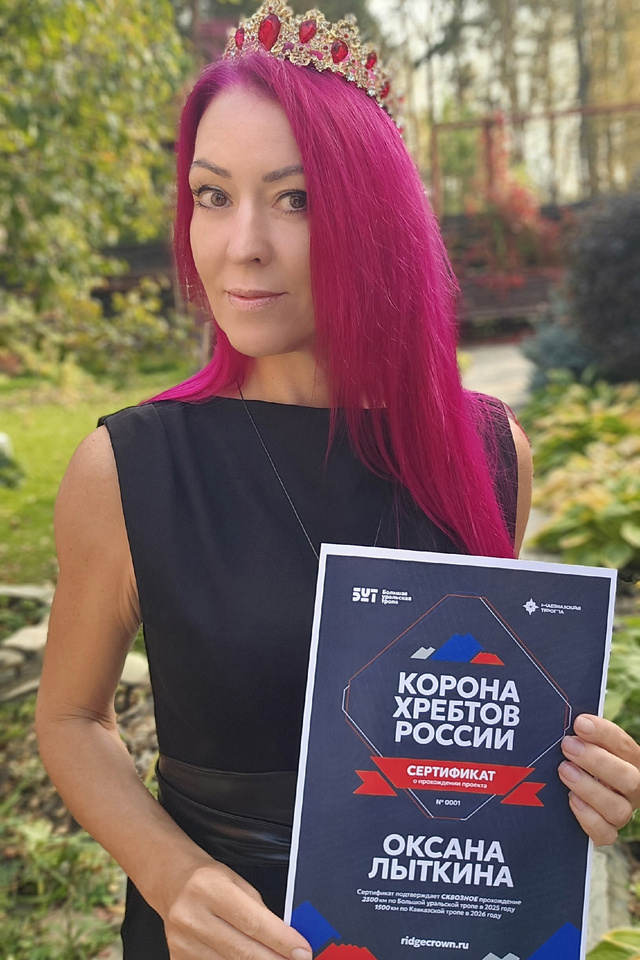

Чудеса в походе — часть навигации.
ПУТЕШЕСТВЕННИЦА · ПИСАТЕЛЬ
 Solo
— Путь начинается не с первого шага,
Solo
— Путь начинается не с первого шага,
а с осознания, что тебе некуда отступать.
Оксана Соло
Автор книг о тропах России и зарубежья.
Журналист, режиссёр, мама троих сыновей. В 2025 году прошла 2300 км по Большой уральской тропе соло — первая в России.
В 2026 году прошла 1600 км по Кавказской тропе. Первая обладательница «Короны хребтов России».
Не спортсменка. Не туристка. Просто женщина, которая однажды решила изменить свою жизнь.
а с осознания, что тебе некуда отступать.
ИСТОРИИ, КОТОРЫЕ СТАНОВЯТСЯ КНИГАМИ
Книги
Каждая дорога оставляет историю. Некоторые из них хочется сохранить на страницах.
Урал БЕЗ каблуков.
Купить
02
Скоро...
новая история уже в пути
Шаг королевы
Книга готовится Скоро
03
Скоро...
следующая глава
Новая книга
Название появится позже
ИЗ ЖИЗНИ ПРОЕКТА
Все новости ↗
Новости
Новые маршруты, события и истории из жизни проекта.
Загружаем новости…